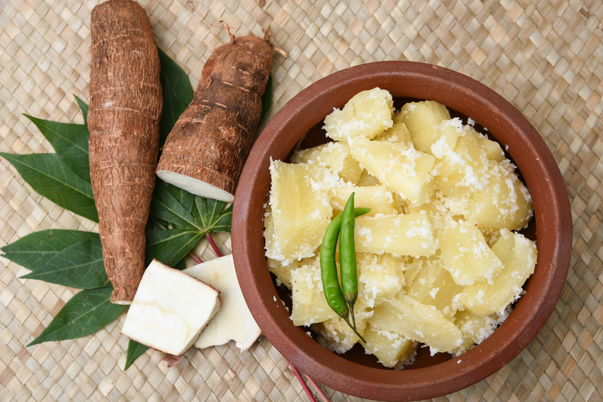
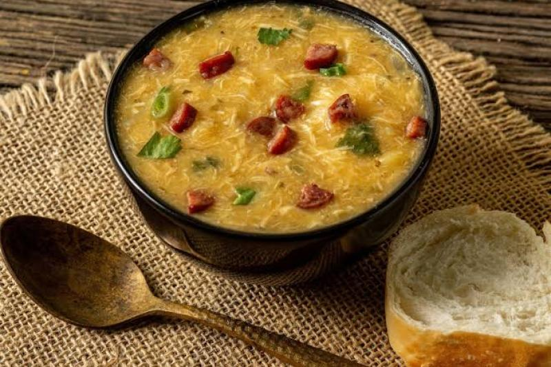
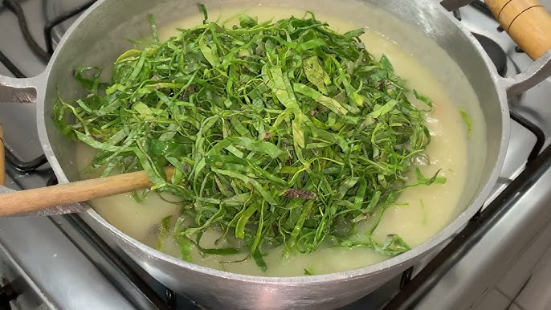

A mandioca é uma planta com compostos cianogênicos, sendo consumida na forma de aipim ou macaxeira
quando possui baixo teor dessas substâncias. Na indústria, a mandioca “brava” é transformada em
farinha e fécula, utilizadas em diversos setores, como alimentos e cosméticos. Variedades
biofortificadas são ricas em carotenoides, que ajudam a combater a desnutrição.
Origem e Cultivo
A mandioca, originária da América do Sul, é uma planta perene pertencente à família Euphorbiaceae.
Ela é amplamente cultivada em regiões tropicais e subtropicais devido à sua resistência em condições
adversas, como pragas e secas. A espécie mais cultivada é a Manihot esculenta, cujas raízes
tuberosas são a principal fonte de alimento. O cultivo da mandioca envolve o plantio de brotos,
conhecidos como estacas, que podem ser colocados diretamente no solo. A mandioca se adapta bem a
diferentes tipos de solo e climas, mas prefere locais com boa drenagem e temperatura amena. O
crescimento é rápido, levando de 8 a 24 meses para a colheita, dependendo da variedade e das
condições climáticas.
Benefícios Nutricionais
Nutricionalmente, a mandioca é rica em carboidratos, fibras, vitaminas do complexo B, e minerais como
cálcio, ferro e fósforo. Ela não contém glúten, tornando-se uma excelente opção para pessoas com
doença celíaca e para aqueles que buscam uma dieta sem glúten. A mandioca é uma fonte de energia
rápida e pode ser um importante componente em dietas balanceadas. Além disso, a mandioca tem um alto
teor de fibras, o que ajuda a regular o trânsito intestinal e pode contribuir para a sensação de
saciedade, auxiliando no controle de peso. Os carotenoides encontrados em algumas variedades de
mandioca, como as biofortificadas, são importantes para a saúde ocular e podem reduzir o risco de
doenças crônicas.
Clique para saber mais!
Receitas com Mandioca
Aqui estão algumas receitas deliciosas que utilizam a mandioca:
Purê de Mandioca:
Cozinhe a mandioca em água fervente até que fique macia (cerca de 20-30 minutos).
Escorra a água e amasse a mandioca com um garfo ou um espremedor. Misture manteiga a
gosto, sal e pimenta até obter uma consistência cremosa. Sirva quente como
acompanhamento.
Bolo de Mandioca:
Rale 500g de mandioca e misture com 2 xícaras de açúcar, 4 ovos e 1 xícara de leite de
coco. Adicione 1/2 xícara de manteiga derretida e uma pitada de sal. Misture bem e
despeje em uma forma untada. Asse em forno pré-aquecido a 180°C por cerca de 40-50
minutos, ou até que o topo esteja dourado. Deixe esfriar antes de servir.
Farofa de Mandioca:
Em uma panela, refogue 1 cebola picada e 2 dentes de alho em 2 colheres de sopa de
manteiga até que fiquem dourados. Adicione 2 xícaras de farinha de mandioca, misturando
bem para incorporar. Tempere com sal, pimenta e ervas de sua preferência. Cozinhe por
mais alguns minutos, mexendo sempre, até que a farofa fique crocante. Sirva como
acompanhamento.
Chips de Mandioca:
Corte a mandioca em fatias finas (cerca de 2mm de espessura). Frite as fatias em óleo
quente até que fiquem douradas e crocantes. Retire do óleo e coloque sobre papel toalha
para absorver o excesso de gordura. Tempere com sal a gosto e sirva como petisco.
Escondidinho de Mandioca:
Cozinhe 500g de mandioca até que esteja macia e amasse para fazer um purê. Em uma
panela, refogue 300g de carne moída com cebola e alho até que esteja cozida. Tempere a
gosto. Em um refratário, coloque a carne no fundo, cubra com o purê de mandioca e leve
ao forno a 180°C por 20-30 minutos para gratinar. Sirva quente.
Mandioca
A mandioca é uma planta com compostos cianogênicos, sendo consumida na forma de aipim ou macaxeira quando
possui baixo teor dessas substâncias. Na indústria, a mandioca “brava” é transformada em farinha e
fécula, utilizadas em diversos setores, como alimentos e cosméticos. Variedades biofortificadas são
ricas em carotenoides, que ajudam a combater a desnutrição.
Cultivo da Mandioca
A mandioca, originária da América do Sul, é uma planta perene pertencente à família Euphorbiaceae.
Ela é amplamente cultivada em regiões tropicais e subtropicais devido à sua resistência em condições
adversas,
como pragas e secas. A espécie mais cultivada é a Manihot esculenta, cujas raízes tuberosas
são a principal fonte de alimento. O cultivo da mandioca envolve o plantio de brotos, conhecidos como
estacas,
que podem ser colocados diretamente no solo. A mandioca se adapta bem a diferentes tipos de solo e
climas,
mas prefere locais com boa drenagem e temperatura amena. O crescimento é rápido, levando de 8 a 24 meses
para a colheita, dependendo da variedade e das condições climáticas.
Raiz da Mandioca

Descrição sobre o Preparo da Raiz da Mandioca:
"A raiz da mandioca é lavada, descascada e cortada em pedaços. Após esse processo, é cozida ou ralada
para a extração de
suas propriedades nutritivas. Quando seca e moída, transforma-se em farinha, amplamente utilizada em
diversas receitas tradicionais.
É essencial que a mandioca brava passe por processos de cozimento para neutralizar compostos tóxicos
naturais,
como o ácido cianídrico, que pode estar presente em algumas variedades de mandioca crua."
Rama da Mandioca

Informação sobre a Rama da Mandioca:
"A rama da mandioca refere-se às folhas e brotos tenros da planta de mandioca, que é uma importante
fonte de alimento em várias culturas. Assim como as raízes, a rama é rica em nutrientes, oferecendo
vitaminas e minerais essenciais, como ferro, cálcio e vitamina A.
Ela é utilizada em diversas preparações culinárias, como refogados, sopas e saladas, destacando-se por
seu sabor delicado e valor nutricional. A colheita da rama pode ser feita ao longo do ciclo da planta,
permitindo que os agricultores aproveitem tanto as raízes quanto as partes superiores.
O uso da rama da mandioca é uma prática sustentável, pois a planta continua a crescer e produzir raízes
após a colheita das folhas."
Folhas da Mandioca

Informação sobre o Preparo das Folhas da Mandioca:
"As folhas da mandioca são comestíveis e muito nutritivas, ricas em proteínas, fibras e vitaminas. Elas
podem ser utilizadas em diversas receitas, sendo comuns em refogados, sopas e até mesmo em pratos
típicos, como a 'farofa de folha de mandioca'.
Para o preparo, as folhas devem ser colhidas e lavadas. Em seguida, podem ser picadas e refogadas com
alho e cebola, ou utilizadas em caldos e sopas para agregar sabor e nutrientes.
É importante cozinhar as folhas antes do consumo para eliminar possíveis compostos tóxicos presentes em
sua forma crua. Assim, o consumo das folhas de mandioca é uma forma sustentável de aproveitar
integralmente a planta, contribuindo para uma alimentação saudável e nutritiva."